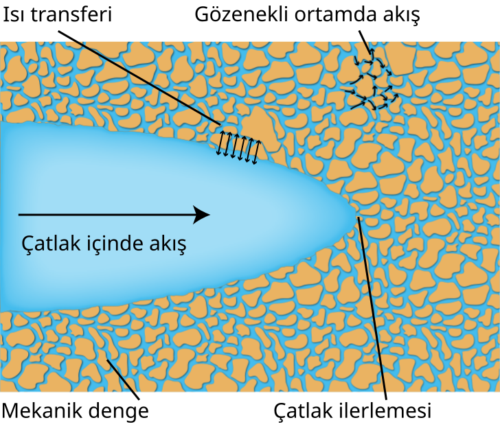

Simülasyonlar
Üç noktalı eğilme
| Alanlar | Denklemler | Sınır koşulları |
|---|---|---|
| \(\boldsymbol{u}(\boldsymbol{x},t)\) | \(\operatorname{div}(\underline{\boldsymbol{\sigma}})+\bar{\boldsymbol{b}}=\boldsymbol{0}\) | \(\begin{aligned}\boldsymbol{u}&=\bar{\boldsymbol{u}} &&\partial\mathcal{B}_{u}\times[0,T]\text{ üzerinde}\\ \underline{\boldsymbol{\sigma}}\boldsymbol{n}&=\bar{\boldsymbol{t}} &&\partial\mathcal{B}_{t}\times[0,T]\text{ üzerinde}\end{aligned}\) |
| \(d(\boldsymbol{x},t)\) | \(\operatorname{div}\boldsymbol{q}_{d}-\underline{\mathcal{H}}_{d}+f_{d}=0\) | \(\boldsymbol{q}_{d}\cdot\boldsymbol{n}_{\mathcal{L}}=0\quad\partial\mathcal{L}\times[0,T]\text{ üzerinde}\) |
Faz alanı yöntemiyle modellenen, çentikten başlayan çatlak ilerlemesi.
Deforme olmuş ağ üzerinde hasar alanı \(d\). Yer değiştirmeler, daha iyi görülebilmesi için 15 kat büyütülmüştür. Yakın görünüm, çentiği ve ilerleyen çatlağı gösterir. Video, kaydedilmiş 100 çözüm adımını izler.
Akışkan–katı etkileşimi

Doktora tezimden bir çizim: gözenekli ortamlarda hidrolik kırılmayı etkileyen bağlı fiziksel süreçler. Çizim: Muhittin Babaoglu.